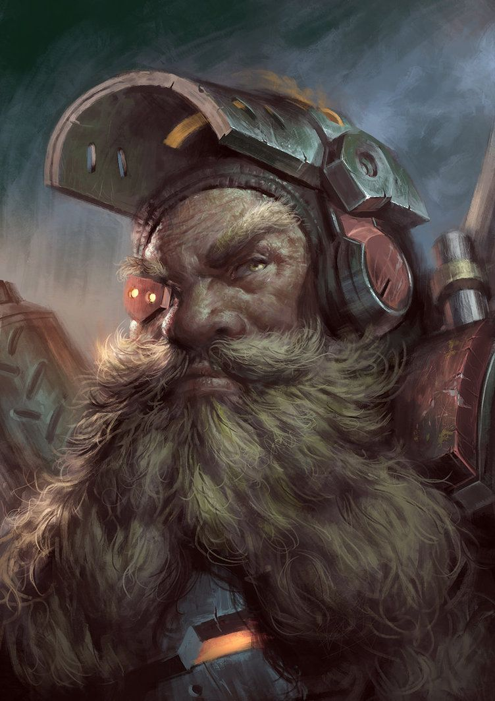
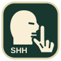

Bancada de preparação
Éter, magias e equipamentos
Repita os efeitos usados na mesa. Estes controles demonstram a apresentação, sem alterar uma partida.
Éter e arma do Patrono

Éter1/4
A arma ocupa o canto inferior esquerdo. Vida e armadura ficam à direita.
Silêncio

Silenciado
Magia preparada
Casa de combateMagia preparada
✧